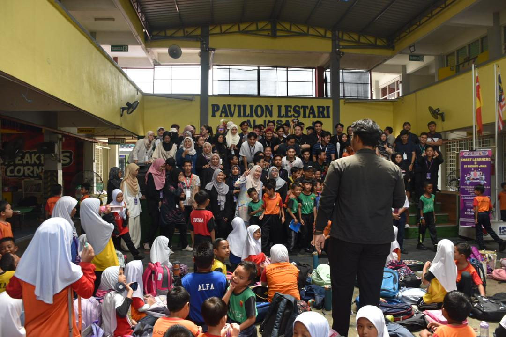

November '24 - May '25
"Peneraju Teknologi SPRINT Certified Data Analyst - ACDA program"
During my last semester which is industrial training, I was fortunate to be selected for the Peneraju Teknologi SPRINT Certified Data Analyst ACDA program, fully sponsored by Yayasan Peneraju. This 7-month certification journey, conducted by APIIT/APU, offered an incredible opportunity to deepen my understanding of data analytics and gain internationally recognized certifications including Microsoft Certified Data Fundamentals and Power BI Data Analyst Associate.
Motivated by a strong passion for data and analytics, I embraced the chance to sharpen both my theoretical knowledge and practical skills. From structured learning modules to certification exam preparation, each component of the program was thoughtfully designed to build industry-relevant competencies.
What made this experience even more meaningful was the support system provided — from expert trainers to a well-structured learning environment. I actively engaged in discussions, absorbed new concepts, and stayed committed to the learning goals throughout the program.
part of this initiative not only expanded my technical capabilities but also reminded me of the importance of upskilling, especially for those of us from the B40 group. I am truly grateful to Yayasan Peneraju for their trust and investment in my development, and I look forward to applying these skills in real-world data engineering scenarios.
September '24
"INTERNET OF THINGS (IoT) MADANI B40 Training Program"
During the semester break, I took the initiative to participate in a 5-day intensive program titled "Internet of Things (IoT) – Madani B40 Training Program." Motivated by a deep interest in smart technologies and real-world applications of IoT, I remained fully engaged throughout the entire training. I saw this as an opportunity not only to broaden my technical skills but also to understand how IoT connects with industry standards like Cisco certification.
With hands-on learning, expert guidance, and an encouraging environment, I made the most of every session by asking questions, exchanging ideas, and collaborating with peers. My eagerness to learn and contribute helped make the experience both personally rewarding and valuable for the entire group
August '24
"Deep Dive into the Capabilities and Constraints of Neural Networks" program!
During the semester break, I took the initiative to join a 4-day intensive course titled "Deep Dive into the Capabilities and Constraints of Neural Networks." Driven by a strong desire to expand my knowledge in the field of neural networks, I remained fully engaged throughout each session. I embraced the opportunity not only to absorb complex concepts but also to actively contribute by asking meaningful and thought-provoking questions. My curiosity and commitment to learning helped foster a more enriching and collaborative learning environment for everyone involved.
May '24
"DAHLIA @ Sekolah Padang Jawa : Smart Learning"

As the Media Team Leader for SULAM DAHLIA @ Sekolah Padang Jawa: Smart Learning, I was responsible for overseeing the entire media coverage of the program. Prior to the event, I coordinated with the Board management of Sulam Dahlia and the school principal to ensure smooth planning. On the event day, I assigned locations for team members to cover and worked closely with the Poster Team to design promotional materials such as posters, templates, and brochures for social media. Throughout the event, I managed the posting of highlight photos and videos for each activity and session, collected media content from all team members, organized them systematically by activity, and shared the complete folder with all Sulam Dahlia members. After the event, I led a postmortem session to review our work and discuss improvements for future initiatives.